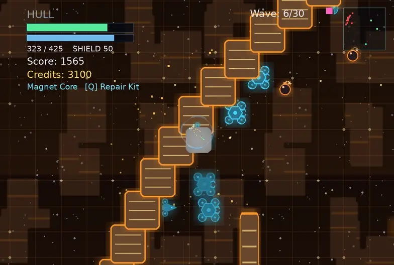
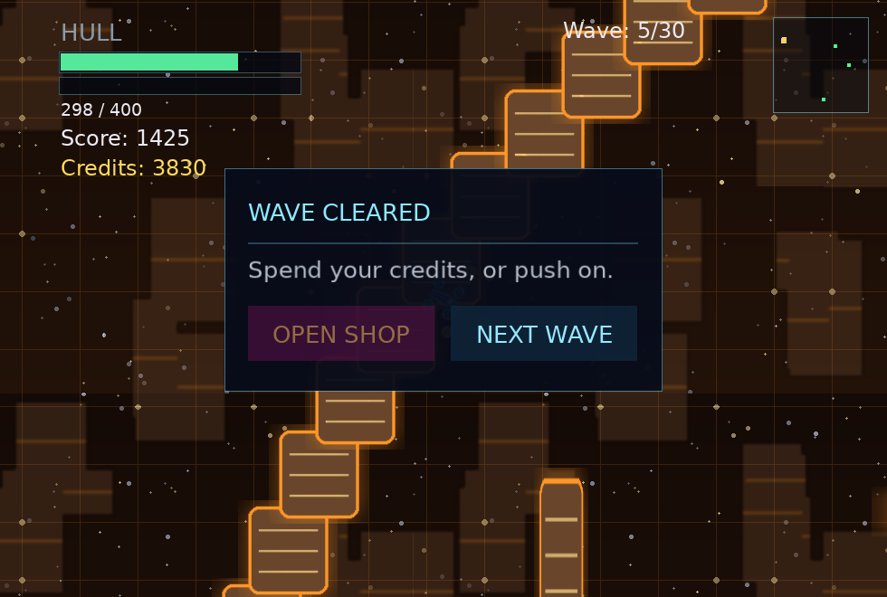
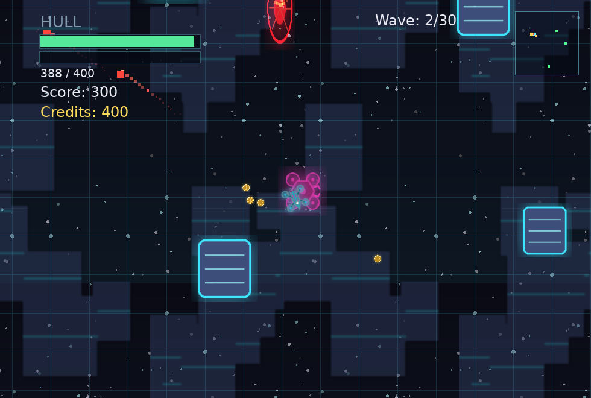
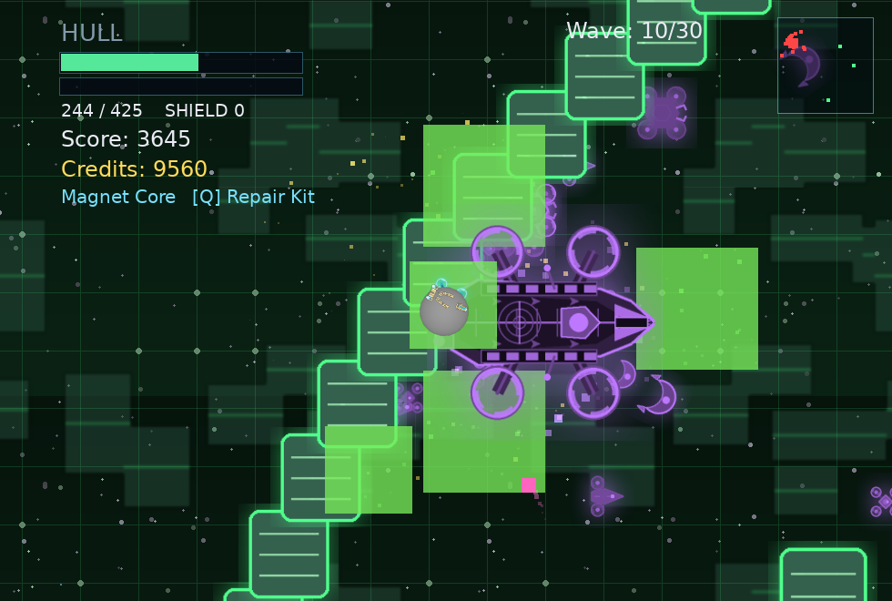
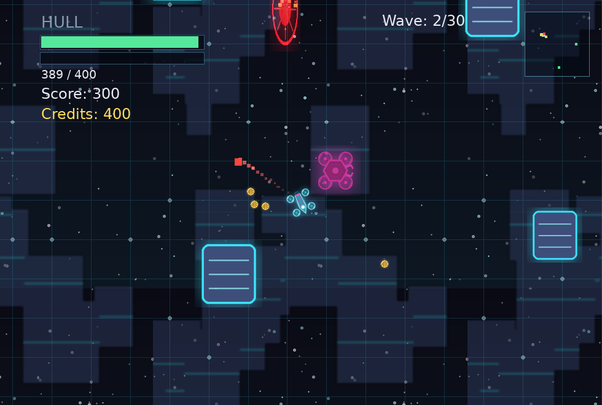
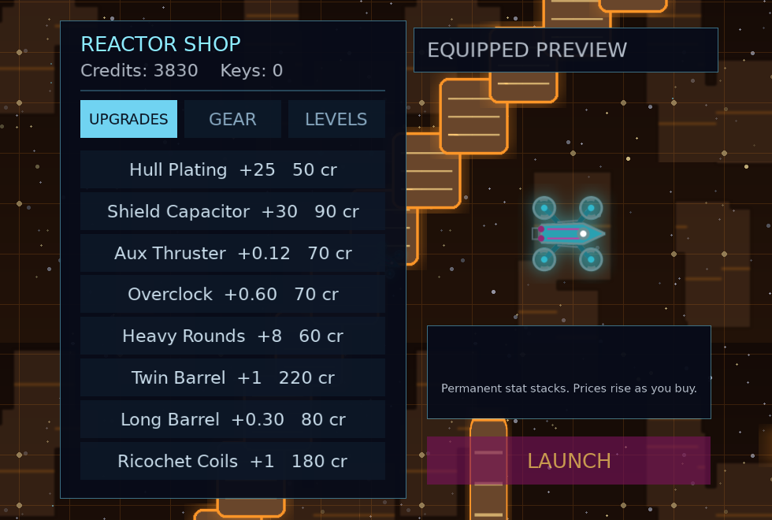
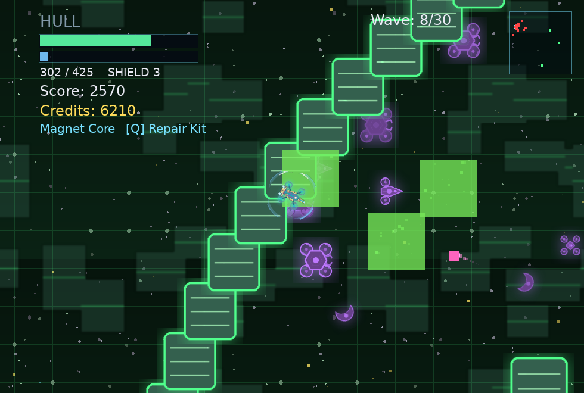
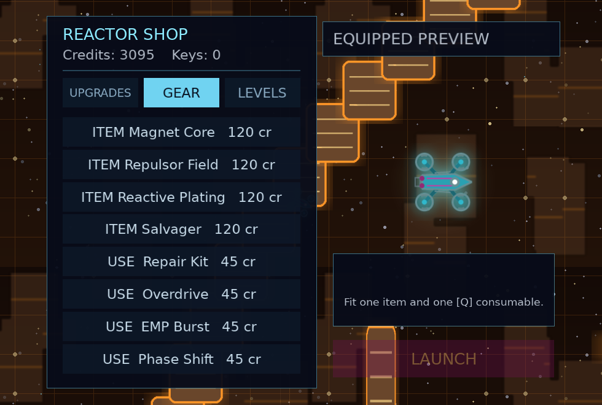
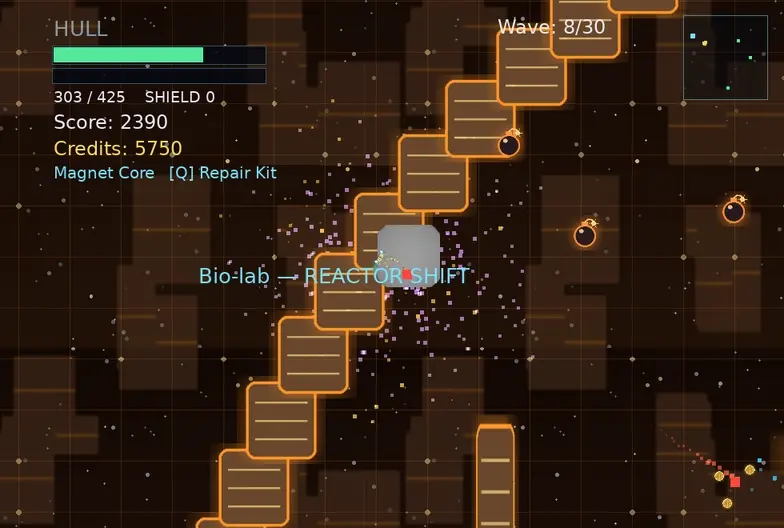

Arena survivalReactor
Drone
One maintenance drone. Thirty waves. Nine arenas that each want you dead in a different colour.

You fly a small drone inside a failing reactor. Enemies pour in from the rim in waves, you shoot them, they drop credits, and every fifth wave the run pauses and lets you spend those credits on something that makes you harder to kill. Every tenth wave a capital drone arrives and hands you a new power for killing it. Clear thirty waves and you win. Lose your hull and you don't.
Section 01
Quick start
Enough to start playing right now. Everything after this is detail.
In ten seconds
- Pick Normal or Hard on the title screen — or just press Space for Normal.
- Move with WASD or the arrow keys.
- Aim with the mouse. The drone always faces your cursor.
- Hold left mouse to fire. You can hold it down the whole run.
- Right mouse is your weapon's secondary — every weapon has its own: a charged slug, a crescent burst, a flamethrower, a blizzard.
- Press Space in flight to dash — a fast burst that hurts what it passes through. You bank dash charges (one to start; bosses add more), so spent charges refill over time.
- Walk over the credits enemies drop. Spend them when the run pauses.
Two things kill new players: standing still, and forgetting that touching an enemy hurts. Keep moving, and treat every enemy as a thing you must not bump into. The exception is the crescent moons — those shoot at you from a distance, so cover and angles matter as much as spacing does.
Section 02
Controls
Short list. The shop keys only matter while the shop is open, and E does nothing until a boss has given you something to fire.
| Input | Does | When |
|---|
Space means two things, never at once. In a menu it starts or restarts a run; in flight it dashes. Pressing it at the title and holding it into the run does not dash — that press was already spent starting the run.
Section 03
A run, start to finish
Every run is the same shape. Learning where the pauses fall is most of learning the game.
- Choose a difficulty — and a ship. Normal or Hard, once, at the title. The run keeps that setting even if you restart from a death. A second ship (a fast, weak-per-shot gatling) appears on that screen once your lifetime score across all runs is high enough; until then the title shows you the threshold. If you saved a run, CONTINUE is on this screen too.
- Fight a wave. Enemies spawn out at the rim of the arena and come for you. The first half of the arc sends a set number of them; the back half just keeps them coming for a fixed stretch of time.
- Clear the arena. A wave isn't over when the last one spawns — it's over when the last one dies. Stragglers hiding at the far rim are still your problem. If something gets truly stuck, the reactor eventually scraps it for you.
- Take the pause. Every fifth cleared wave the run stops and asks: open the shop, or push straight on? The spawner waits — but your drone still flies, so this is your chance to sweep up the credits the last kill scattered.
- Spend, or don't. Banking credits for something expensive is a real strategy. So is buying a cheap hull patch right now because you're at a sliver of health. Six shop stops in a full arc, so a skipped one is a real cost.
- Change arenas. Every few waves the whole arena crossfades into a new one — new colours, new obstacle layout, new hazards, a new signature enemy, and the rest of the swarm re-tinted to match.
- Kill the capital drone. Waves 10, 20 and 30 are boss waves: one huge carrier, themed to whatever arena you're in, summoning escorts on a timer. The wave does not end until it dies. Killing it opens a screen offering three actives — pick one. Later bosses either upgrade the one you hold or offer one you don't.
- Reach wave thirty. The last boss is the finale, and at half health it tears the arena open into the Singularity — a black-hole void you finish the fight in. Clear it and the run is a win. Lose your hull anywhere along the way and it's over — click or press Space to start again.
- Prestige, or stop. Finishing the arc offers a prestige run: start again from wave one with every upgrade and every item stripped, in exchange for a permanent bonus to hull, speed and damage that stacks each time you take it, up to five levels. It's stored between sessions, so a prestige level you earned tonight is still there tomorrow.

Section 04
Staying alive
Hull
Your health. It does not regenerate on its own — the only ways back up are a Hull Plating purchase (which repairs as well as raises your maximum) and a Repair Kit. Treat every point as spent for good until you reach a shop.
Shields
Bought, not given. Once you own a Shield Capacitor you get a pool that soaks damage before your hull does, and it refills on its own — but only after you've gone a few seconds without being hit. Shields reward disengaging. Take a hit, break away, come back topped up.
Being saved by your shield still counts as being hit: you still flash, the screen still shakes, and the regen delay still resets. A shield is a buffer, not invulnerability.
Scrap on the floor
Repair and shield scrap appear on their own, one at a time, at a steady interval and never right on top of you — you have to go and get them. Only a few exist at once, they don't count against the credit pickups, and neither kind can push you past your maximum. They are the reason a bad wave is survivable without a shop stop: surviving is a matter of moving, not of what you banked before the wave started.
Contact damage
Most things hurt you by touching you, and every archetype does a different amount on contact — the big slow ones hurt most. The crescent moons are the exception: they shoot, and their shots hurt you the same way a body does.
The dash
Space throws you forward in a burst that damages everything you pass through — each enemy once per dash, not once per frame — and you take at most one hit crossing a crowd. Dashes come from a small bank of charges: you start with one (the Owl starts with two), every boss you kill adds one, and a spent charge refills on a long clock. It is the answer to being surrounded, and it is usually the difference between dying on a timed wave and clearing it.
Invulnerability window
After a hit you get a brief window where you can't be hurt again. It's short, and it's the reason brushing through a crowd is survivable while sitting inside one is not.
The minimap
The arena is far larger than the screen, so the corner map is not decoration. It shows you as cyan, enemies as red, the boss as a bigger red, health scrap as green, and loot as gold — anything outside the arena clamps to the rim on its true bearing, so the map never lies about which way something is. Read it for two things: which side the swarm is arriving from, and where the credits you abandoned are.
Obstacles and the wall
The pillars and blocks scattered through each arena are solid. You can't fly through them and neither can your shots — but neither can enemies, and they have to walk around. Used well, an obstacle is cover. Used badly, it's the thing you back into while a swarm closes. The arena's outer wall is a hard boundary: you cannot leave, and there is no corner to hide in.

Section 05
What's shooting at you
Three plain archetypes make up the bulk of every wave, and they trade speed against toughness in the obvious way. On top of those: crescent moons that shoot, one signature unit per arena theme, and a capital ship every ten waves. Gauges are relative, not stats — five boxes means "the most of anything in the arena".
They all seek you directly when they can see you, and route around obstacles when they can't. You can't lose them behind a pillar — you can only slow them down and make them arrive strung out instead of all at once, which is usually the whole fight.
The moons — the things that shoot back
Waning crescents that keep their distance and fire at you. They arrive in three tiers, each joining the stream at a fixed point in the arc, and each one is a step up in how hard it is to walk away from:
Moons turn to face what they are shooting at and fire from the mouth of the crescent, so the sprite tells you where the shot is coming from before it arrives.
Arena specialists — one per theme
Every arena theme injects its own signature unit into the stream while it is live. They are the reason arriving in a new arena changes how you fight, not just what you are looking at. On the arc's second pass through the four themes you meet the same four units again, tougher.
The capital drone
On waves 10, 20 and 30 a single "Capital Drone Carrier" arrives: enormous, heavily armoured, slow, and wearing the colours of whatever arena it turned up in. It summons escorts on a timer, and it borrows the signature attack of the arena's specialist, so a Foundry boss mines the floor and a Bio-lab boss poisons it. The wave does not end until it is dead — there is no outlasting it. It pays out with an active item.

Section 06
Waves & difficulty
Thirty waves, two kinds
The first half of the arc sends a fixed number of enemies: kill them all and the wave is done. The back half switches to timed waves — enemies keep arriving for a set stretch of time, and the wave only ends once the stream stops and you've cleared what's left. Timed waves are where runs usually end, because you can't rush them; you can only survive them.
Difficulty climbs continuously across the thirty: more enemies, arriving closer together, with more health and more speed, and the tougher archetypes start appearing in the mix earlier than they did. By the last few waves you're facing the whole roster at once, roughly twice as durable and noticeably faster than it started.
Where the punctuation falls
| Wave | What happens |
|---|
Normal and Hard
| Aspect | On Hard |
|---|
Hard is not just a health multiplier: the extra credits mean you can buy more, so it plays faster and richer rather than simply grindier.
Prestige
Clearing wave thirty offers you a prestige run. Taking it restarts the arc from wave one with nothing you bought — no upgrades, no gear, no active — and in exchange every future run is permanently stronger: more hull, more speed, more damage, a flat step per level, up to five levels. It is the one thing in the game that survives closing the window, and it is a choice: nothing hands it to you for playing a lot, only for finishing and going again.
Your prestige level is shown on the pause screen alongside the rest of your run stats.
Section 07
Credits & loot
Dead enemies scatter credit pickups on the floor. You collect them by flying over them — nothing is collected automatically, and nothing is collected from across the arena. That single design choice is what makes the economy interesting: the credits are always lying exactly where the fighting just was, and going to get them means going back in.
Not every kill drops something. Tougher enemies drop more reliably and are worth more when they do. Pickups sit on the floor for a while and then expire, so loot you ignore during a hectic wave is genuinely gone — though the between-waves prompt leaves you flying, which is exactly enough time to sweep up what the last kill dropped before you commit to the shop.
Coins never land inside an obstacle, a hazard or a mine: a drop that would have is nudged out to the nearest clear spot. If something is unreachable it's because you can't get there safely, not because the reactor put it in a wall.

Section 08
The shop
The shop opens at the between-waves pause, every fifth cleared wave — or any time you spend a key. While it's open the arena is completely frozen: nothing spawns, nothing moves, nothing can hurt you. Take as long as you want.
- Press Tab to switch pages. Page one is upgrades, page two is gear.
- Press the row number to buy. Keys 1 through 8 map to the rows on the page you're looking at.
- Press B to leave. That launches the next wave. (Space deliberately does nothing here — you're probably still holding it.)
How pricing works
Upgrades are permanent and stackable, and each copy of a given upgrade costs meaningfully more than the last. Buying your fifth Hull Plating is an expensive decision in a way the first one wasn't. Each upgrade also has a cap — you cannot stack any single one forever.
Gear works differently: items and consumables are equipped, not stacked, so they have a flat price and no escalation. You hold one item and one consumable at a time, and buying a new one replaces what you were carrying.

Section 09
Upgrades
Eight permanent upgrades, page one of the shop. All stackable up to a cap, all more expensive each time.
Buying anything shows on the drone itself. The stock chassis flies with its hardpoints empty — two bare rails along the flanks and an open socket in the tail — and every upgrade you buy bolts its own hardware into one of them: armour slabs, a finned heat-sink, magazine drums, barrels, muzzle coils. The engine plume runs hotter and denser as the purchases stack, so a kitted drone at wave 25 looks nothing like the one you started with.
The Shield Capacitor is the exception: instead of hardware, it hangs a field ring around the drone. It hums while it holds, flares white where a hit lands, breaks into dead emitter stubs when it is spent, and visibly rebuilds itself while you stay out of trouble — so you can read your shield without looking at the HUD.

Section 10
Gear
Page two. You carry one item and one consumable. Buying another of either replaces what you're holding, so gear is a choice rather than a collection.
Items — passive, permanent, always on
Consumables — one use, spent with Q
Actives — not bought, won
An active is the reward for killing a capital drone, so the shop never sells one and you cannot have one before wave 10. You hold one at a time, on a shared cooldown, and the slot sits in the bottom-left corner of the HUD. A later boss either deepens the one you hold or offers you one you don't.

Section 11
The arenas
The arc runs through nine arenas: four themes, each visited twice, then the void you finish in. They crossfade into one another mid-run rather than cutting. Each has its own palette, its own obstacle layout, its own hazard placement and its own signature enemy — and the rest of the swarm is re-tinted to whichever one is live, always in a colour that contrasts with the floor.
The second pass through a theme is not a repeat: the layouts are rotated, and its specialist comes back tougher.
Each band below is painted in its arena's own palette — or use the buttons in the sidebar to recolour the whole page.

Section 12
Reference card
Everything worth remembering, in one place.
| Key | Action |
|---|
| Rule | Why it matters |
|---|